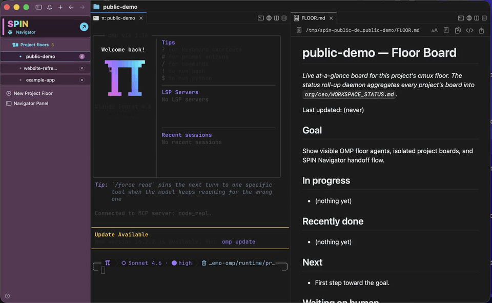

SuperSuper: the lightweight harness around agent CLIs that you can track, audit, and interrupt. · PiPi: the agentic backbone. Specifically oh-my-pi (omp): every floor agent and interactive session runs on it. · InteroperableInteroperable: project agents cooperate through SPIN files, and OMP can fall through across configured models/providers. · NavigatorNavigator: the routing system for projects, approvals, receipts, and human attention.
Run a small AI software org from one local app. One Navigator coordinates many isolated OMP project agents, refines handoffs, and keeps receipts on disk.

One coding agent in one repository is manageable. The hard part starts when several agents are running across several projects, each with its own terminal, context, queue, receipts, and blockers. Without a layer above them, the solo builder becomes the scheduler.
Multiple project agents quickly turn into tabs, status checks, handoffs, and half-remembered context.
One huge shared prompt is not the answer. Project agents should stay focused on their own repositories.
Queues, receipts, blockers, approvals, and progress reports need one place to come together.
The human should see approvals that matter, not babysit every local edit, test run, or status update.
Model, provider, quota, and retry behavior should be handled inside the harness, not by tab juggling.
Every meaningful run needs receipts so the org can be inspected after the fact.
SPIN uses both meanings deliberately. It coordinates isolated project agents, and it uses OMP so those agents are not pinned to one model, provider, vendor CLI, or subscription window.
Each project keeps its own repository, context, queue, memory, and receipts. SPIN lets those agents cooperate through plain files and Navigator decisions.
OMP owns provider auth, roles, order, and fallback chains. If one lane is unavailable, work can fall through to another configured model or provider.
Before SPIN sends work to a project floor, the Navigator turns your raw request into a concrete directive with paths, constraints, checks, and reporting instructions.
SPIN opens one controlled workspace above your project agents. First launch routes to SPIN Onboarding, then normal launches open the Coordinator and project floors. The Coordinator owns routing, org state, approvals, prompt refinement, and cross-project awareness while each OMP-backed project agent stays scoped to its own repository and context.
$ spin init # wizard: providers, OpenRouter, your first project $ spin up # opens the SPIN workspace ✓ Coordinator floor open: talk to it like a person ✓ driver supervised · live boards up
From there, you talk to the Coordinator instead of juggling terminal tabs:
The high-level agent you talk to. It creates projects, rewrites handoff prompts, routes work, tracks blockers, and decides what needs attention.
Each project gets its own OMP-backed lane with its own repository context, state, queue, board, and receipts.
Queued work runs through a supervised dispatcher, so durable jobs do not depend on a visible terminal pane staying open.
SPIN.app is the main Mac experience: a self-contained app with a SPIN-branded workspace UI, bundled OMP/Pi as the agent engine, and the same auditable plain-file SPIN runtime inside the app. Download the beta DMG from GitHub, drag the app into Applications, then open SPIN to enter the onboarding workspace instead of a generic terminal.
FLOOR.md board in the SPIN Navigator.SPIN.app carries the cmux-compatible UI app, cmux, omp, spin-agent, runtime scripts, icon, dock controls, and notices.
OMP owns account setup and model fallback. SPIN writes the runtime roles, provider order, and fallback chains for coordinator and project work.
The Navigator turns a raw ask into a project-ready directive with concrete goal, paths, constraints, checks, and reporting shape.
The current GitHub beta is Apple Silicon, ad-hoc signed, and not notarized. Use right-click Open if macOS shows a warning; optional checksum steps are in the install guide.
The source install is the power-user path for Linux, automation, debugging, headless operation, and app development. It clones SPIN, seeds the org files, and installs any missing dependencies for you. Review the script first, like any curl | bash. (Prefer a single offline file? Grab spin-offline.sh; it embeds the whole kit.)
$ curl -fsSL https://raw.githubusercontent.com/claudiaclawdbot/spin/main/spin-bootstrap.sh | bash
$ git clone https://github.com/claudiaclawdbot/spin.git ~/spin $ cd ~/spin && ./install.sh ✓ linked: spin, org → ~/.local/bin/ $ spin init # onboarding wizard → opens the SPIN workspace
Needs bash, node, and one agent CLI to run headless. omp (oh-my-pi) is the interactive backbone SPIN is built on: every floor agent is an OMP session, and it is the Pi in SPIN. The cmux-derived UI is the workspace surface; SPIN owns onboarding, routing, queues, receipts, and project state.
No database, no message broker, no daemon you can't read. The whole org talks through plain files you can grep and audit.
| Name | What it is | Role |
|---|---|---|
| SPIN | a lightweight bash+node harness above project agents | schedules, routes, gates, refines handoffs, audits, and preserves context isolation |
omp | agent harness + model gateway (oh-my-pi) | runs Coordinator, project floors, and jobs first; handles model/provider fallback across signed-in services |
claude codex gemini | direct vendor CLIs | outer fallback if OMP is missing or hard-fails |
ollama | local model runtime | last-resort outer fallback |
| cmux-derived UI | bundled workspace surface | shows Coordinator and project floors while SPIN controls launch routing, state, and handoffs |
SPIN does local, reversible work without asking. It stops and waits for exactly four things, enforced behaviorally by every prompt and surfaced as an approval queue.
main or any human-owned repoThe five layers, one tick in detail, the job lifecycle, the org CLI.
🔥v1→v4: every failure mode that shaped the design, paid for in burned quota.
🗺️Known weaknesses, honestly ranked. What's solid, what still leans on luck.
📦Download, install, first launch, health checks, updates, and uninstall.
🚦Positioning, demo script, launch checklist, beta boundaries, and feedback loop.
🔒Local automation boundaries, reporting path, provider-key posture, and beta trust notes.